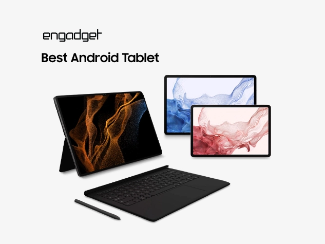
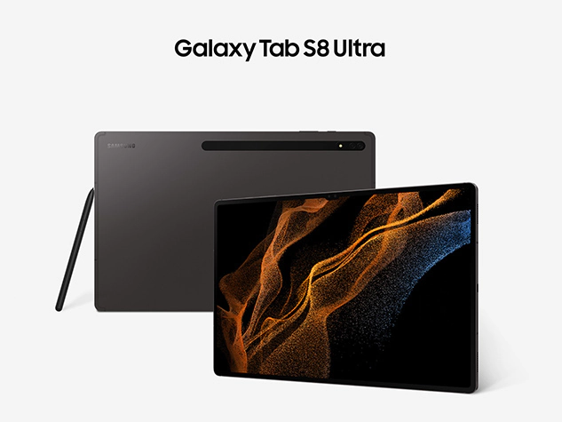

Available in three sizes – an 11-, 12.4- and a huge 14.6-inch model – Samsung’s Galaxy Tab S8 line has the right-sized screen for practically any need. And while Android typically isn’t quite as accommodating to productivity as Windows or iPadOS, Samsung’s Dex mode offers a desktop-like UI complete with multi-window support and a taskbar for potent multitasking.

Samsung’s mobile displays are also some of the best in the business, with support for 120Hz refresh rates and vibrant colors from their OLED panels. And unlike Samsung’s flagship phone line, the Galaxy Tab S8 still comes with microSD card support, though sadly, Samsung couldn’t seem to find room for a dedicated headphone jack. You even get a choice of three different covers: a simple folio, a keyboard cover and a keyboard cover with a built-in touchpad, so you can choose the right accessory for your needs.